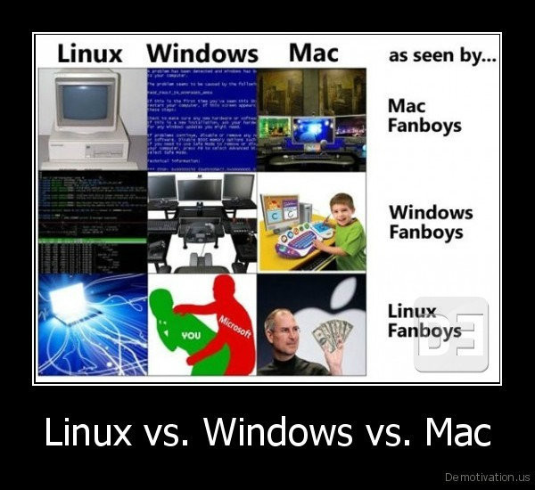

历史，年轻人多看点历史，长长见识，历史是比较枯燥的，而且未必能学到什么，但是学个东西，对它的过去一点都不了解也不大好，这里也就简单说说，个人认为，历史的简单了解，只要做到，听到相关名词的时候不要一头雾水就好，看太多也记不了多少。

Linux是“类Unix”(Unix-like)，和Unix有各种瓜葛，反正是和钱有关的，Unix的大部分代码(90%)是c语言写的，Unix是要钱的(5w$?，Linux是开源不要钱符合GPL开源协议的，开发Linux时，因为各种版权问题，不能直接用Unix的源码，于是Linux是模仿Unix的思想，不用Unix的代码，利用各种开源工具比较gnu的软件，写出来的兼容POSIX标准的新系统，结果是Linux和Unix相似，Linux兼容Unix，但源码不一样，发展方向什么的都不一样了，关键Linux免费，于是高速发展了。
关于兼容，Linux上能不能跑Unix程序不懂，没用过Unix，但是各种接口各种系统调用是兼容的，具体比如说，我现在在学"Unix高级C语言编程"，系统内核提供的各种c语言函数都是一样的，一样的函数名，一样的参数列表，一样的返回类型，做些看起来一样的事，比如，fd=open("temp",O_WRONLY);在所有类Unix的系统下都有这个open函数，都可以这么用，都表示只写(write only)打开文件temp，然后返回int类型的“文件描述符”赋值给变量fd，然而如果不是类Unix，那就不一定了，比如windows下的c语言就未必有open这个函数，就算有也未必是这么用，就算刚好能这么用也未必返回int类型，总之windows怎么做就和Unix无关了，